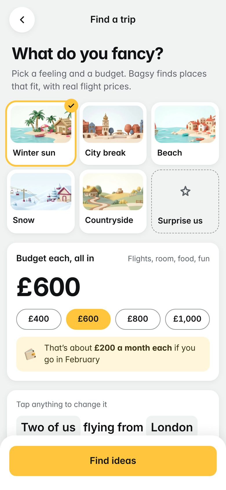
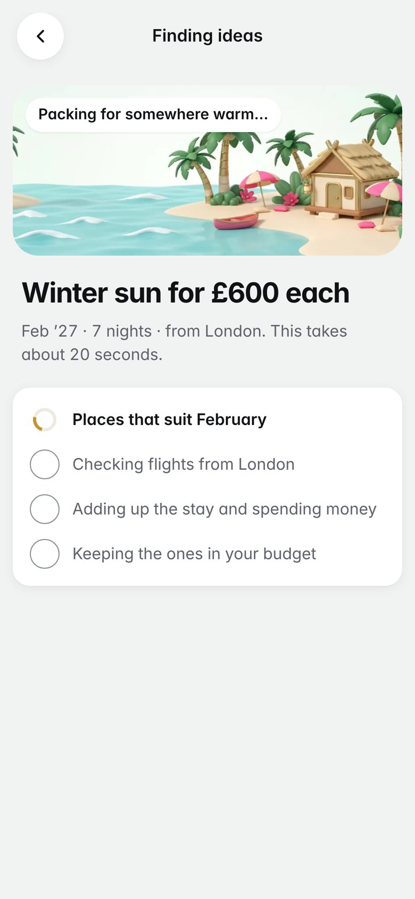
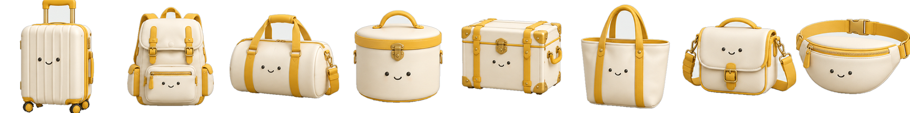

Is this a real problem?
Couples who go away together usually save in two separate bank accounts, with a rough idea of who's paying for what. The tools that exist each cover one slice of that. Bank pots hold the money. Budgeting apps track spending. Splitwise settles up afterwards.
None of them help with the part before booking: deciding where to go, what it'll cost, who's covering which bit, and whether you're both on track.
The bet
Split one trip into parts (flights, stay, spending money) and let each person bagsy the parts they'll cover. Everyone saves in their own bank. Bagsy plans and keeps track, and never touches the money.
Never moving money was a deliberate line. It keeps the app simple to trust, means no regulation to deal with, and keeps the product about planning together.
Plan alone, then invite
One person can plan the whole trip in a couple of minutes before anyone else joins.
Parts, not a pot
Each part has an owner, a cost and a due date, so "are we on track?" has a real answer.
A nudge on payday
"Did £100 go in?" One tap to confirm, and your partner sees it straight away.
How I worked: AI as the team, me as the lead
I ran it the way I'd run a small team. I set the direction, agreed the principles, reviewed everything that came back and decided what shipped. The difference was speed. A change I asked for in the morning was on my phone the same day, so I judged real screens with real data instead of mock-ups.
The first thing I set up was the design system: colours, type, spacing and core components. That wasn't a design exercise for its own sake. It was guardrails, the same way you'd give a new team a shared kit on day one so their output stays consistent without you checking every pixel.
- Writing and testing the code
- Database, sign-in and notifications
- Wiring up AI and flight-price services
- Building screens in Figma from the live app
- What we build, and what we don't
- The look: scenes, bags, type, colour
- Every trade-off about money and trust
- Saying "not good enough yet"
The calls I made
These are the decisions that shaped the product. Several of them overruled what AI suggested first.
Trip types, not continents
Each trip gets a soft 3D scene based on the kind of trip it is (coast, city, snow, desert) rather than a map or a landmark. I made the scenes myself with an image model, to match the 3D icons.
A scene says how a trip will feel. It works for anywhere, and it never gets a city wrong.
Bags instead of faces
People pick a little luggage character as their avatar instead of a photo or a drawn face. AI's first versions sat the bags in pastel circles. I took the circles away and made the bags bigger.
It's the name made visible: you bagsy a bag. It's warmer than initials and gives the app a character people remember.
Surprise trips never show the cost
You can plan a trip in secret, send a "save the date", then reveal it. The person being surprised only ever sees the place and the dates.
The whole point is a gift. Seeing the price would spoil it.
AI for judgement, real data for prices
For the holiday finder I considered using AI agents to scrape deals from social media. I chose to have AI pick places that suit the season and budget, and to take flight prices from Aviasales data. Booking always hands off to the provider.
In a money app, one invented price costs you trust. AI is good at "where's warm in February?" and bad at quoting today's fares.
Every idea fits one screen
After reviewing the first design, I set a rule: you see every part of an idea without scrolling. Dates first, then the total, the budget bar and the monthly saving.
You're comparing places on a phone. If you have to scroll each card, you lose track of what you're comparing.
The holiday finder
"Winter sun in February, £600 each, from London." Bagsy suggests places that fit, prices the flights with recent fares, estimates the stay and spending money, and works out what you'd each need to save a month. One tap turns an idea into a planned trip.


Where AI got it wrong
Shipping fast with AI doesn't mean accepting its first answer. These are real moments from the build. Each needed a human eye on a real phone.
The status bar stuck on yellow
First fix: a 1-pixel strip at the top of the screen, which iOS ignoredAfter my screenshot: a strip big enough for iOS to pick up its colourOnly 2 of 8 flight prices came back
Return fares alone were too sparse to price most placesPairing one-way fares lifted it to about 3 in 5, with estimates clearly labelledA floating suitcase
A decorative bag hopping in mid-air on the waiting screenI asked whether it earned its place. It didn't, so it went"Cluttered and hard to scan"
Three columns of icons, amounts and notes on each ideaOne total, one bar, three plain rowsPrices in dollars
"Check flights" opened the booking site in US dollarsLinks now open in poundsA heart with no meaning
A "favourite" button that didn't go anywhereReplaced with "Send to Ines", which says what it doesThe details that make it feel like a product

Eight bags, six strap colours, and two people on a trip never get the same colour.
Eight trip-type scenes. The colour behind the clock matches the sky while the scene is on screen.
Haptics
A tick on controls, a double pulse when you log a saving, a firmer one when you delete.
Motion with a purpose
The tab highlight glides and swells slightly. A surprise reveal unblurs the scene. All of it respects Reduce Motion.
Honest small print
"Recent fare", "Bagsy's estimate" and "may not include a hold bag", shown wherever a price appears.
What it shows about design teams
The work moves from making things to deciding what's good enough, and saying no quickly.
With AI as the team, a design leader's job doesn't shrink. It concentrates. Setting guardrails up front, judging real screens on a real phone, and catching what's plausible but wrong were the parts that mattered.
Making things got cheap, so the scarce skills were taste, clear principles, and knowing which trade-offs touch trust. That's where I'd expect design teams to be heading too.
Where it could go: a share of booking commissions if people book through it. Bagsy itself stays free because it never touches money.
What's next
More couples
Get 5 to 10 couples using it and learn where it breaks for people who aren't me.
Decide together
Both people like or pass on ideas, and a match becomes the trip.
Ideas inside each part
Restaurants for the dinner budget, days out for the tickets part, once you know where you're going.